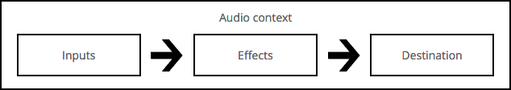
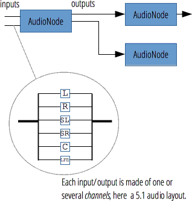
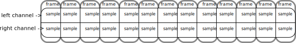
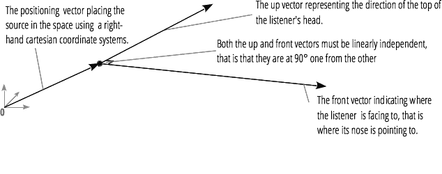

This article explains some of the audio theory behind how the features of the Web Audio API work. It won't turn you into a master sound engineer, but it will give you enough background to understand why the Web Audio API works like it does, and allow you to make better informed decisions while developing with it.
Audio graphs
The Web Audio API involves handling audio operations inside an audio context, and has been designed to allow modular routing. Basic audio operations are performed with audio nodes, which are linked together to form an audio routing graph. Several sources — with different types of channel layout — are supported even within a single context. This modular design provides the flexibility to create complex audio functions with dynamic effects.
Audio nodes are linked via their inputs and outputs, forming a chain that starts with one or more sources, goes through one or more nodes, then ends up at a destination (although you don't have to provide a destination if you, say, just want to visualise some audio data.) A simple, typical workflow for web audio would look something like this:
- Create audio context
- Inside the context, create sources — such as
<audio>, oscillator, stream - Create effects nodes, such as reverb, biquad filter, panner, compressor
- Choose final destination of audio, for example your system speakers
- Connect the sources up to the effects, and the effects to the destination.

Each input or output is composed of several channels, which represent a specific audio layout. Any discrete channel structure is supported, including mono, stereo, quad, 5.1, and so on.

Audio sources can come from a variety of places:
- Generated directly by JavaScript by an audio node (such as an oscillator.)
- Created from raw PCM data (the audio context has methods to decode supported audio formats.)
- Taken from HTML media elements (such as
<video>or<audio>.) - Taken directly from a WebRTC
MediaStream(such as a webcam or microphone.)
Audio data: what's in a sample
When an audio signal is processed, sampling means the conversion of a continuous signal to a discrete signal; put another way, a continuous sound wave such as a band playing live is converted to a sequence of samples (a discrete-time signal) that allow a computer to handle the audio in distinct blocks. A sample is a single value or set of multiple values at a specific point in time (and space in the case of spatialisation.)
A lot more information can be found at the Wikipedia page on Sampling (signal processing).
Audio buffers: frames, samples and channels
An AudioBuffer takes as its parameters a number of channels (1 for mono, 2 for stereo, etc), a length, meaning the number of sample frames inside the buffer, and a sample rate, which is the number of sample frames played per second.
A sample is a single float32 value that represents the value of the audio stream at each specific point in time, in a specific channel (left or right, if in the case of stereo). A frame, or sample frame is the set of all values for all channels that will play at a specific point in time: all the samples of all the channels that play at the same time (two for a stereo sound, six for 5.1, etc.)
The sample rate is the number of those samples (or frames, since all samples of a frame play at the same time) that will play in one second, measured in Hz. The higher the sample rate, the better the sound quality.
Let's look at a Mono and a Stereo audio buffer, each one second long, and playing at 44100Hz:
- The Mono buffer will have 44100 samples, and 44100 frames. The
lengthproperty will be 44100. - The Stereo buffer will have 82100 samples, but still 44100 frames. The
lengthproperty will still be 44100 since it's equal to the number of frames.

When a buffer plays, you will hear the left most sample frame, and then the one right next to it, etc, etc. In the case of stereo, you will hear both channels at the same time. Sample frames are very useful, because they are independent of the number of channels, and represent time, in a useful way for doing precise audio manipulation.
Note: To get a time in seconds from a frame count, simply divide the number of frames by the sample rate. To get a number of frames from a number of samples, simply divide by the channel count.
Here's a couple of simple trivial examples:
var context = new AudioContext(); var buffer = context.createBuffer(2, 22050, 44100);
Note: In digital audio, 44,100 Hz (alternately represented as 44.1 kHz) is a common sampling frequency. Why 44.1kHz? Firstly, because the hearing range of human ears is roughly 20 Hz to 20,000 Hz, and via the Nyquist–Shannon sampling theorem the sampling frequency must be greater than twice the maximum frequency one wishes to reproduce, the sampling rate therefore had to be greater than 40 kHz. In addition to this, signals must be low-pass filtered before sampling, otherwisealiasing occurs, and, while an ideal low-pass filter would perfectly pass frequencies below 20 kHz (without attenuating them) and perfectly cut off frequencies above 20 kHz, in practice a transition bandis necessary, where frequencies are partly attenuated. The wider this transition band is, the easier and more economical it is to make an anti-aliasing filter. The 44.1 kHz sampling frequency allows for a 2.05 kHz transition band.
If you use this call, you will get a stereo buffer (two channels), that, when played back on an AudioContext running at 44100Hz (very common, most normal sound cards run at this rate), will last for 0.5 seconds: 22050 frames / 44100Hz = 0.5 seconds.
var context = new AudioContext(); var buffer = context.createBuffer(1, 22050, 22050);
If you use this call, you will get a mono buffer (one channel), that, when played back on an AudioContext running at 44100Hz, will be automatically *resampled* to 44100Hz (and therefore yield 44100 frames), and last for 1.0 second: 44100 frames / 44100Hz = 1 second.
Note: audio resampling is very similar to image resizing: say you've got a 16 x 16 image, but you want it to fill a 32x32 area: you resize (resample) it. the result has less quality (it can be blurry or edgy, depending on the resizing algorithm), but it works, and the resized image takes up less space. Resampled audio is exactly the same — you save space, but in practice you will be unable to properly reproduce high frequency content (treble sound).
Planar versus interleaved buffers
The Web Audio API uses a planar buffer format: the left and right channels are stored like this:
LLLLLLLLLLLLLLLLRRRRRRRRRRRRRRRR (for a buffer of 16 frames)
This is very common in audio processing: it makes it easy to process each channel independently.
The alternative is to use an interleaved buffer format:
LRLRLRLRLRLRLRLRLRLRLRLRLRLRLRLR (for a buffer of 16 frames)
This format is very common for storing and playing back audio without much processing, for example a decoded MP3 stream.
The Web Audio API exposes *only* planar buffers, because it's made for processing. It works with planar, but converts the audio to interleaved when it is sent to the
sound card, for playback. Conversely, when an MP3 is decoded, it starts off in interleaved format, but is converted to planar for processing.
Audio channels
Different audio buffers contain different numbers of channels, from the more basic mono (only one channel) and stereo (left and right channels) to more complex sets like quad and 5.1, which have different sound samples contained in each channel, leading to a richer sound experience. The channels are usually represented by standard abbreviations detaild in the table below:
| Mono | 0: M: mono |
| Stereo | 0: L: left |
| Quad | 0: L: left |
| 5.1 | 0: L: left |
Up-mixing and down-mixing
When the amount of channels doesn't match between an input and an output, up- or down-mixing happens according the following rules. This can be somewhat controlled by setting the AudioNode.channelInterpretation property to speakers or discrete.
| Interpretation | Input channels | Output channels | Mixing rules |
|---|---|---|---|
speakers |
1 (Mono) |
2 (Stereo) |
Up-mix from mono to stereo. The M input channel is used for both output channels (L and R).output.L = input.M |
1 (Mono) |
4 (Quad) |
Up-mix from mono to quad. The M input channel is used for non-surround output channels (L and R). Surround output channels (SL and SR) are silent.output.L = input.M |
|
1 (Mono) |
6 (5.1) |
Up-mix from mono to 5.1. The M input channel is used for the center output channel (C). All the others (L, R, LFE, SL, and SR) are silent.output.L = 0output.C = input.M |
|
2 (Stereo) |
1 (Mono) |
Down-mix from stereo to mono. Both input channels ( L and R) are equally combined to produce the unique output channel (M).output.M = 0.5 * (input.L + input.R) |
|
2 (Stereo) |
4 (Quad) |
Up-mix from stereo to quad. The L and R input channels are used for their non-surround respective output channels (L and R). Surround output channels (SL and SR) are silent.output.L = input.L |
|
2 (Stereo) |
6 (5.1) |
Up-mix from stereo to 5.1. The L and R input channels are used for their non-surround respective output channels (L and R). Surround output channels (SL and SR), as well as the center (C) and subwoofer (LFE) channels, are left silent.output.L = input.L |
|
4 (Quad) |
1 (Mono) |
Down-mix from quad to mono. All four input channels ( L, R, SL, and SR) are equally combined to produce the unique output channel (M).output.M = 0.25 * (input.L + input.R + input.SL + input.SR) |
|
4 (Quad) |
2 (Stereo) |
Down-mix from quad to stereo. Both left input channels ( L and SL) are equally combined to produce the unique left output channel (L). And similarly, both right input channels (R and SR) are equally combined to produce the unique right output channel (R).output.L = 0.5 * (input.L + input.SL)output.R = 0.5 * (input.R + input.SR) |
|
4 (Quad) |
6 (5.1) |
Up-mix from quad to 5.1. The L, R, SL, and SR input channels are used for their respective output channels (L and R). Center (C) and subwoofer (LFE) channels are left silent.output.L = input.L |
|
6 (5.1) |
1 (Mono) |
Down-mix from 5.1 to mono. The left ( L and SL), right (R and SR) and central channels are all mixed together. The surround channels are slightly attenuated and the regular lateral channels are power-compensated to make them count as a single channel by multiplying by √2/2. The subwoofer (LFE) channel is lost.output.M = 0.7071 * (input.L + input.R) + input.C + 0.5 * (input.SL + input.SR) |
|
6 (5.1) |
2 (Stereo) |
Down-mix from 5.1 to stereo. The central channel ( C) is summed with each lateral surround channel (SL or SR) and mixed to each lateral channel. As it is mixed down to two channels, it is mixed at a lower power: in each case it is multiplied by √2/2. The subwoofer (LFE) channel is lost.output.L = input.L + 0.7071 * (input.C + input.SL)+ 0.7071 * (input.C + input.SR) |
|
6 (5.1) |
4 (Quad) |
Down-mix from 5.1 to quad. The central ( C) is mixed with the lateral non-surround channels (L and R). As it is mixed down to two channels, it is mixed at a lower power: in each case it is multiplied by √2/2. The surround channels are passed unchanged. The subwoofer (LFE) channel is lost.output.L = input.L + 0.7071 * input.C |
|
| Other, non-standard layouts | Non-standard channel layouts are handled as if channelInterpretation is set to discrete.The specification explicitly allows the future definition of new speaker layouts. This fallback is therefore not future proof as the behavior of the browsers for a specific amount of channels may change in the future. |
||
discrete |
any (x) |
any (y) where x<y |
Up-mix discrete channels. Fill each output channel with its input counterpart, that is the input channel with the same index. Channels with no corresponding input channels are left silent. |
any (x) |
any (y) where x>y |
Down-mix discrete channels. Fill each output channel with its input counterpart, that is the input channel with the same index. Input channels with no corresponding output channels are dropped. |
|
Visualizations
In general, audio visualizations are achieved by accessing an ouput of audio data over time (usually gain or frequency data), and then using a graphical technology to turn that into a visual output (such as a graph.) The Web Audio API has an AnalyserNode available that doesn't alter the audio signal passing through it, but instead outputs audio data that can be passed to a visualization technology such as <canvas>.

You can grab data using the following methods:
AnalyserNode.getFloatFrequencyData()- Copies the current frequency data into a
Float32Arrayarray passed into it.
AnalyserNode.getByteFrequencyData()- Copies the current frequency data into a
Uint8Array(unsigned byte array) passed into it.
AnalyserNode.getFloatTimeDomainData()- Copies the current waveform, or time-domain, data into a
Float32Arrayarray passed into it. AnalyserNode.getByteTimeDomainData()- Copies the current waveform, or time-domain, data into a
Uint8Array(unsigned byte array) passed into it.
Note: For more information, see our Visualizations with Web Audio API article.
Spatialisations
An audio spatialisation (handled by the PannerNode and AudioListener nodes in the Web Audio API) allows us to model the position and behavior of an audio signal at a certain point in space, and the listener hearing that audio.
the panner's position is described with right-hand Cartesian coordinates; its movement using a velocity vector and its directionality using a directionality cone:

The listener's position is described using right-hand Cartesian coordinates; its movement using a velocity vector and the direction the listener's head is pointing using two direction vectors: up and front. These respectively define the direction of the top of the listener's head, and the direction the listener's nose is pointing, and are at right angles to one another.

Note: For more information, see our Web audio spatialization basics article.
Fan-in and Fan-out
In audio terms, fan-in describes the process by which a ChannelMergerNode takes a series of mono input sources and outputs a single multi-channel signal:

Fan-out describes the opposite process, whereby a ChannelSplitterNode takes a multi-channel input source and outputs multiple mono output signals: